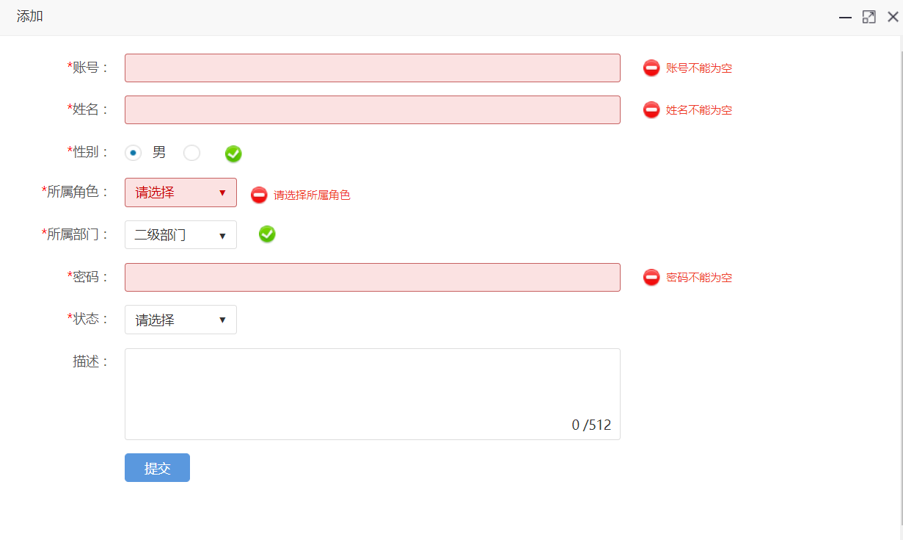

表单效验默认使用的是Validform（点击查看官网API），相信很多人都用过，而且非常熟悉。 Validform 插件为表单提供了强大的验证功能，让客户端表单验证变得更简单，同时提供了大量的定制选项，满足应用程序各种需求。
Validform需要引用以下文件：
JAdmin在模板化的编辑页面，全部添加了表单效验，只需要将form表单添加validform样式， 便可以进行表单效验，可以在页面的js添加validOk方法，那么表单效验通过后不再提交，将执行validOk方法。
validform = $(".validform").Validform({
callback:function(form){
if(typeof validOk === 'function' ){
validOk();
// 表单效验成功后的操作，默认为提交该表单
}else{
form[0].submit();
}
return false;
}
});
下图为Validform效验提示默认样式：
com.jadmin.vo.enumtype.Regular类内置了一些常用的效验正则：
public @interface Regular {
/** 账号的正则 */
public static String account = "/^[a-zA-z]\\w{3,15}$/";
/** 数字的正则 */
public static String numer = "/^[0-9]*$/";
/** 正整数的正则 */
public static String posInteger = "/^([1-9]\\d*|[0]{1,1})$/";
/** 邮箱的正则 */
public static String email = "/^(\\w-*\\.*)+@(\\w-?)+(\\.\\w{2,})+$/";
/** 电话的正则 */
public static String phone = "/^\\s*[.0-9]{8,11}\\s*$/";
/** 手机号的正则 */
public static String mobile = "/^1[34578]\\d{9}$/";
/** 身份证号的正则 */
public static String idcard = "/^(\\d{15}$|^\\d{18}$|^\\d{17}(\\d|X|x))$/";
/** QQ的正则 */
public static String QQ = "/^\\s*[.0-9]{5,10}\\s*$/";
/**车牌号正则表达式 */
public static String carNumber = "/^[京津沪渝冀豫云辽黑湘皖鲁新苏浙赣鄂桂甘晋蒙陕吉闽贵粤青藏川宁琼使领A-Z]{1}[A-Z]{1}[警京津沪渝冀豫云辽黑湘皖鲁新苏浙赣鄂桂甘晋蒙陕吉闽贵粤青藏川宁琼]{0,1}[A-Z0-9]{4}[A-Z0-9挂学警港澳]{1}$/";
/** 姓名的正则 */
public static String uname = "/[\u4E00-\u9FA5]{2,5}(?:·[\u4E00-\u9FA5]{2,5})*/";
/** 密码的正则 */
public static String passWord = "/^[\\@A-Za-z0-9\\!\\#\\$\\%\\^\\&\\*\\.\\~]{6,22}$/";
/** 图片的正则 */
public static String pictureUrl = "/([ ]?(.jpg|.JPG|.JPEG|.jpeg|.BMP|.bmp|.gif|.GIF|.PNG|.png)$)/";
}
更多更详细的API 建议大家去官网阅读，这里就不再搬运了， http://validform.rjboy.cn/